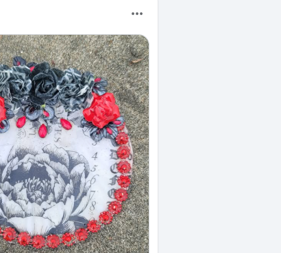
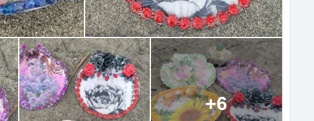

A finished shell
Whatever is listed above, as it sits. You get that object, sand still in the story.
Dana Fink paints the Pacific onto what the tide already finished.
Saturday 1–3 she teaches because the work has a job: every piece and every class seat raises money for her husband’s cancer care. Ask for a piece if you want. Know this: Dana is complex. Your request will be considered when she sits down to make. You will often be happily surprised rather than find exactly what you expected. Such is the way of the art. The ocean provides.
What’s on the table Ask the tide
Shells and florals only — no family snapshots. Pulled from Dana’s public Beachgypsycreations posts (facebook.com/TarotShop). More of the year’s tables go up as we pull the rest of the feed.



Whatever is listed above, as it sits. You get that object, sand still in the story.
Saturday 1–3. You leave with work of your hands and the till still goes to treatment.
Tell her a color, a person, a tide. She will consider it. You may not get a copy of the picture in your head.
Write “ocean provides.” Dana chooses. This is often the better order.
Dana is complex, and thus your request will be considered when creating, though often you will be happily surprised rather than find exactly what you expected. Such is the way of the art. The ocean provides.
Dana Fink makes under the name Beachgypsycreations (the TarotShop page). If you know her from the ranch, you know the hands.
In August she wrote the reason out loud. She is teaching Saturday 1:00 to 3:00 because she is trying to make money to support her husband’s cancer treatment. That sentence is the whole brief.
The shop is a night market that washed ashore: lantern gold on wet sand, tarot-adjacent without costume. Cash App still lives as the QR on her Facebook until the domain till is live.